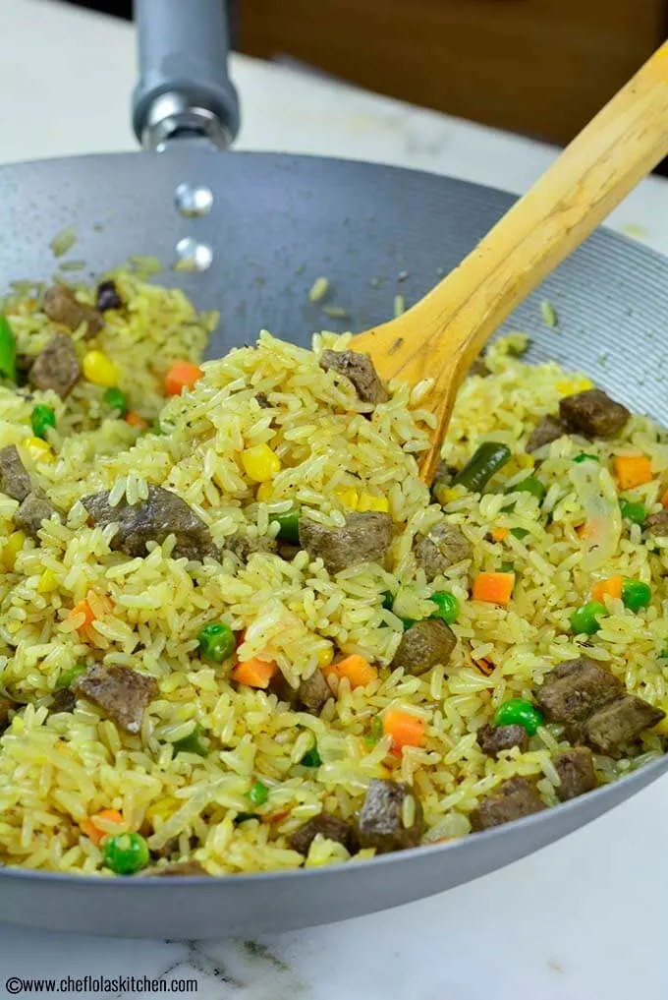

Brief Intro to Nigerian Fried Rice
Nigerian Fried Rice is a very simple yet delicious recipe. This version relies on a ton of
fresh vegetables, Beef Liver, and a little bit of oil for crisping it up.

The added beef liver gives the fried Rice a very nice rich but subtle taste, and this is
why it is one of the most popular choices in Nigeria. Though you can also use Shrimp or any
protein you'd like. If you would love to make vegan fried rice, you can omit the Beef liver
or Shrimps entirely!

This fried rice is entirely different from the popular Asian Chicken Fried Rice because the
depth of the taste in the latter comes from the Soy sauce while the depth of taste of the
latter comes from the Curry powder, Thyme, Seasoning cubes, and of course
the abundance of vegetables like Carrots, Green beans, Peas, sweet corn, and Onions.
Just like Jollof Rice we savor these meals so much, and we can barely do without them in
gatherings and festive seasons, and it's a meal you can make in no time. Such a simple
recipe, but the impact it makes in a gathering is quite remarkable!
This recipe starts with already parboiled rice, so it makes the whole process easier. If you
don't have already parboiled rice, you can see how to do that here. It's also okay to use a
day old rice that has been refrigerated it is very convenient, and the result is just as good.
I also cooked this parboiled rice in a bit of well-seasoned stock so that the Rice can absorb
more flavor. Though it's advisable to do this, however, this step can be skipped if you are in
a hurry.
Fresh Rice or Leftover Rice?
You can use either freshly cooked rice (parboiled) or leftover cold rice for this recipe. If you
choose to use freshly cooked rice, make sure you choose the right type of Rice. I like to
use the long grain parboiled rice. This type of Rice is very easy to work with when making
Fried Rice likewise, Jollof Rice because it's firmer and less sticky, therefore, making it very
difficult to go wrong when working with it.
Another key to achieving a good result when making this fried rice is to allow the freshly
cooked rice (parboiled) to cool slightly before using it. The rice should be cool to the
touch before adding it to the pan. If you are short of time, simply spread the rice on a
sheet pan so that the steam can easily escape or just place the cooked rice inside the fridge
for a few minutes.
Finally, it is important that you always wash the rice before cooking it. This will help to
remove the excess starch on the rice, which can cause the rice to clump together.